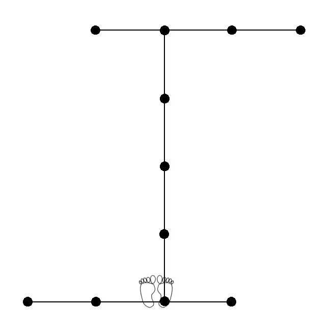

Gensei Shodan
* Alle standen in Zenkutsu-dachi en alle stoten (tsuki) en trappen (geri) op chudan-hoogte.
1. Uitgangspositie Heiko-dachi (linkervoet verzetten vanuit Heisoku-dachi).
2. Draai links 90° met links Gedan-barai.
3. Vorderen met Oi-tsuki, Ki-ai!
4. Draai rechts 180° met rechts Gedan-barai.
5. Vorderen met Oi-tsuki.
6. Draai links 90° met links Gedan-barai.
7. Vorderen met rechts Oi-tsuki.
8. Vorderen met links Oi-tsuki.
9. Vorderen met rechts Oi-tsuki, Ki-ai!
10. Draai links 270° (linkervoet verzetten!) met links Gedan-barai.
11. Met rechts Mae-geri.
12. Neerkomen met Oi-tsuki.
13. Draai rechts 180° met rechts Gedan-barai.
14. Met links Mae-geri.
15. Neerkomen met Oi-tsuki.
16. Draai links 90° met Morote Gedan-barai (hou deze afweer vast in de volgende drie stappen!)
17. Vorderen, met rechts Mae-geri.
18. Vorderen, met links Mae-geri.
19. Vorderen, met rechts Mae-geri, Ki-ai!
20. Draai links 270° (linkervoet!) met links Gedan-barai.
21. Vorderen met Oi-tsuki.
22. Draai rechts 180° met rechts Gedan-barai.
23. Vorderen met Oi-tsuki.
24. Draai links 90° met links Gedan-barai.
25. Op de plaats Gyaku-tsuki, Ki-ai!
26. Achterste voet terugtrekken naar de uitgangspositie Heiko-dachi.
27. Linkervoet bijtrekken tot eindhouding Heisoku-dachi en afgroeten.
Terug naar Kata-pagina